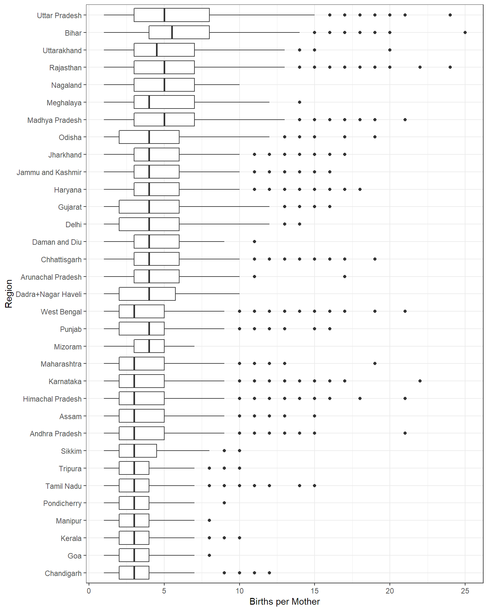

Introduction
The IHDS is summarized here and can be downloaded from the ICPSR. We have developed an R package called tidyICPSR that provides functionality to get the two studies downloaded and formatted into a tidy format with all the column names and column values correct. The package is still in early development and is currently meant more for a proof of concept and could be helpfull for those that would like to use R with the data from ICPSR.
Note that the IHDS study collected data on subjects from the Union territories of India. They are not shown in the spatial graphics below.
2011 IHDS Exploration (Individual)
Household Income
The household income numbers are close to the reports I could find. The median household income from this study data is 31828 NRP.
- https://cmie.com/kommon/bin/sr.php?kall=warticle&dt=2016-07-04%2013:45:29&msec=170
- https://www.quora.com/What-is-the-median-income-of-households-in-different-states-of-India
This graphic shows the meidan (dot) and the 25th and 75th percentiles (linerange) of household income for each region of India.
This geography based facet of India provides histograms of the household income distribution by region in India.
Household Size
The household count numbers seem to make sense based on numbers reported at the following links. The median household size from this study data is 5.
- https://en.wikipedia.org/wiki/Indian_states_ranking_by_household_size
- http://www.arcgis.com/home/item.html?id=6cf22970ea8c4b338a196879397a76e4

Under 5 years old height distributions
Some data quality issues will require further investigation. Also, the ages are grouped by year in the data.

0-1 year old heights by income category
Remember that this figure shows all newborns from 0-12 months.

Under 5 years old weight distributions
Some data quality issues will require further investigation.

0-1-year-old weights by income category
Remember that this figure shows all newborns from 0-12 months.
2011 IHDS Exploration (Births)
Distribution of number of births per household

IHDS Data Prep
The development R package tidyICPSR has the functions used to download and prep the data.
Code
All of the R code to download, process, and replicate this analysis (including the code that generates this document) is available here.